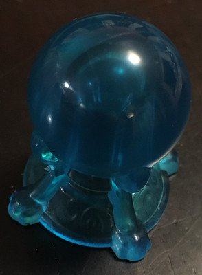
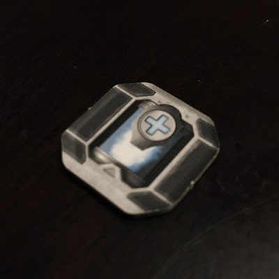

This is a D&D adventure about two friendly monsters. One of them, WOM, was walking along with his pom pom when he was been abducted by the Pom Pom Monster, who is not friendly and wants as many pom poms as he can get.
The other friendly monster is Zoom, the PC (player character). He must rescue WOM from the Pom Pom Monster's lair, the Pom Pom Dungeon!
This adventure is for one player, approximately age six. As we all know, Every Kid Is Different, so this may not work for every six-year-old. Yet, it may work for some four-year-olds or even for some forty-year-olds!
It also requires one Dungeon Master that has played D&D. They don't have to know the rules cold. (I never actually played 5E before running this adventure myself.)
Playing the adventure took about four hours in our playtest.
The Angle
This may be different from adventures you're accustomed to because it comes at the player from the angle that it is an alternate way to play with familiar toys.
To help the player get into what is likely a very new experience to them, every room, creature, and object in the game needs to be represented physically. This frees the player from having to keep track of too much stuff in their head.
However, there is no need for great sculptural fidelity! An eraser with a face on it will represent a goon just fine, for example.
Customize or die
Quite a few modules tell you to "make it your own", but this isn't a nice-to-have here; I think it's essential to connecting with a young player that has no concept of role-playing games.
If you know of a character or object that is familiar to the player, favor it over a character or object that's written here. Get it in the game and don't worry about balance. Replace names and genders freely!
Your game may not end up resembling this module, and that's OK as long as the player connects with the game.
Decide if you're going to replace or rename or otherwise alter the character to be more familiar to the player. For example, if skulls are scary to the player, you can replace Skull Jones with a koala bear or a member of the PJ Masks.
Find a toy or other object in your house to represent the character. It should take up no more than 1-2 square inches (2.5-5 cm2) on a tile.
Read through the items and gather physical objects to represent each of those as well.
The pictures in the items list show what I used, but you should just use the closest thing you have in your house. If you come across something in your house that you want to use, just put it in there. The spirit of this module is using whatever you have around the house to make a game!
If you can't find a prop to represent an item in the list, you can always make chits from paper as a substitute.
What is a chit?
A chit is a small cardboard or tagboard square with an icon on it meant to represent some game entity. They're often used in war games and board games. You can make one by cutting a square out of cardboard and writing on it.
Read through the scenery list and do the same with that—gather physical objects to represent each piece of scenery.
Prepare a character sheet for your player. The player is playing Zoom (or whoever you rename or modify him to). On a sheet of paper, write down:
The PC's name (e.g. Zoom)
The six ability score names (STR, DEX, CON, INT, WIS, CHA), with spaces next to them for the ability score itself and the modifier.
AC: 12 (apply the DEX modifier if you feel like it)
hp: 10/10 (apply the CON modifier if you feel like it)
Special actions: Fly 1/day, Bite.
A section for items.
Have the player roll 3d6 for each ability score, add up the numbers on the dice, then write them down on the sheet. There's unlikely to be a need to reroll or adjust for low scores; the player is unlikely to have internalized that big numbers are better. If it is necessary, go ahead and do it!
If you feel like it, look up the modifiers and put them on the sheet.
That's it! No more character detail is needed.
Playing the game
The main "loop" of the game is the Random Encounter. You'll run it again and again and again to generate most of the dungeon as you play. (I ran it about 20 times, myself.)
Then, you run as many Random Encounters as you like. At some point, preferably after the PC has a sense of what play is like in the dungeon, run the Game Show encounter.
Finally, when you're ready to start wrapping up, run the boss, egress, and ending encounters.
Rules
This adventure nominally uses the 5E rules with the following modifications:
All damage — including damage from bites and swords — is bonk damage, meaning that it is impermanent and does not cause death.
When a character, foe or friend, reaches 0 hp or below, they get knocked out. They then awaken somewhere else. If they are the PC, they awaken either outside the dungeon or in the jail. Whichever the location, the PC will be stripped of all items except for the letter from WOM.
In my playtest, this was consequential enough to motivate the player to avoid losing hp while still being non-scary.
For simplicity's sake, initiative is group initiative. Instead of rolling for each individual, each group (usually there are two: The PC's group and the opponents) each roll a die and whoever has the higher number goes first.
There are no attacks of opportunity. It might not be realistic that you can just walk past an opponent without being attacked simply because it's not their turn, but it is also far easier for everyone that way.
All the player should have to keep in mind is that when it's their turn, they can do two things in a round:
Move
Do one other thing
When the player has to roll something, just tell them what number they have to get. At this age, keeping the number from them doesn't enhance the mystique of the situation. Telling them might make them more engaged in the act of rolling. Plus, it gets the player to think a little bit about greater than or equal to.
Movement is loose. Each character can move about two tile lengths per round. No need to strictly meter this, though.
I say the PC is a fighter, but put aside all class features except hp. Again, this increases the simplicity of the experience, and you can introduce them in a later adventure.
In general, skip rules and make stuff up if it makes the game simpler or more fun.
Encounters
Spatial details
Whenever the PC comes to new room, represent it with the appropriate floor tiles, scenery, and props.
On graph paper, you need to map out the rooms the PC encounters, so that they and the NPCs (including enemies) can revisit them. If you'd rather not do this live, there in an alternative approach. See the pre-rolling section.
The scale is roughly every tile length is about 10 feet (or 3 meters), or 1" equals 2.5 feet.
Ceilings are 10' high (3m), except when noted.
Doors all start off closed, unless you decide it's interesting for them to start open.
The various levels of the dungeon are connected via holes in the floors. There's no stairs. There are sometimes ladders, but these are movable. So, the PC may come to hole without a ladder and may have to either find a ladder or find another creative way to get up or down a level.
Keep in mind that NPCs can move between rooms as easily as the PC can. Your player might find chases to be fun.
Encounter A: WOMs Away
Once the player has their character sheet, kick the adventure off by telling the player that Zoom is at home, when he receives a paper airplane.
Toss the paper airplane to the player and let them examine it. (You may need to hint that they should unfold and read it.)
After they read it, ask if they want to go to Pom Pom Dungeon to rescue WOM.
In the playtest, the answer to the call to action was an immediate yes; no convincing was needed. However, things may not always work out that way. If the player is not sure they want to go, fish around for another motivation to get them there. Failing that, maybe have a giant bird swoop them up and deus ex machina them over to the dungeon.
Encounter B: Classic Goon Behavior
This encounter is a miniature representation of the overall conflict in the adventure.
Set up the room by putting two tiles next to each other, then adding two doors.
A goon telling Pig-Will that he will beat him up if he does not give up the pom pom to the Pom Pom Monster.
Pig-Will will plead for help from the PC.
Encounter C: A Cozy Fireplace
This encounter is meant to show the player that some rooms don't have creatures.
Set up the room by arranging four tiles into a square (breaking down the previous room if you need the tiles), then adding a door, a hole, ladder, and a fireplace.
This room contains:
A door, which goes to the room from Encounter B.
A fireplace containing a fire helmet. There is also fire in it.
A hole with a ladder in it that leads down to the level below.
There is a very real chance that the fire helmet won't be found. In my playtest, the player ignored it completely the first time he went by it. When he later returned to the room, I had Wooper say, "There's something odd about the fireplace," and he still ignored it. I wanted him to find it, but at the same time, I didn't think it was important, so I let it go. If it's important to you, though, you should just say "If you put out the fire, you might find something."
Random Encounter: The Dungeon Core Loop
As mentioned in Playing the Game, random encounters are how the bulk of the dungeon is generated. One difference between random encounters you may be familiar with from other adventures and these random encounters is that these encounter define the rooms as well as the contents of the rooms (much like the random dungeon generator in the appendix of the 1E Dungeon Master's Guide).
For each random encounter:
Roll 1d4 to determine room shape:
1
Hallway: Three tiles in a row
2
Small room: Single tile
3
Medium room: Two tiles
4
Big room: Four tiles arranged in a square
Draw the room on your map. If it collides with an existing room, rotate it. If it still does not fit, reroll. (There's no shame in just picking the room shape you'd like, either.)
Rolling the rooms up as you play can be entertaining for the DM, as they are a surprise to the DM as well as to the player. However, it can also be very stressful to have so much extra stuff to do for every single room. So, you can preroll the encounters and map if you like!
Lay the tiles out on the table.
Roll 1d4 to determine the number of exits that the room has. (Fudge it if you roll a 1 that would result in a dungeon level that is a dead end.)
For each exit, roll 1d6 to determine what kind of exit it is:
Then, go! It seems like a lot, but I found that it goes quickly after you've done a few.
Anytime you want a specific result from any table, just pick it. You, the DM, do not have to respect your own rolls.
Encounter D: The Game Show
This encounter takes place in a big room (2 tiles by 2 tiles) and centers around the Wall of Boxes.
Each box is 4'x4'x4'. The Wall of Boxes as a whole is 12' wide and 20' tall (3.6m x 6m). So, the boxes on the first two rows are easily reachable from the floor, but the top three rows will require a ladder, flying, climbing, or some other creative means.
As the PC opens a box, consult the Wall of Boxes contents table to see what's inside. Remind the player once or twice about the symbol on the box door after they see the box contents.
You can pick from or roll on the random NPC table to put an occupant in this room to make it more interesting. I happened to roll Skull Jones, and the player thought to buy a ladder from it to reach the higher boxes.
Encounter E: The Boss
Here, the PC meets the Pom Pom Monster at last, along with four of his goons. And finally, WOM is found!
Place the Pom Pom Monster by the side of the room opposite to the side that the PC enters through. Put WOM in a corner near the Pom Pom Monster. Put the four goons in the middle of the room.
WOM is hurt and cannot fly while he's hurt. He's also tied up with rope. If healed and untied, he will help out Zoom however he can, including flying him around.
The Pom Pom Monster will demand pom poms from the PC and any allies with them. It will also refuse to release WOM if asked. However, it may be amenable to an exchange of 6 pom poms or more if such an offer is made.
If the PC doesn't produce pom poms or if they demand the release of WOM, the Pom Pom Monster and the goons will attack. See the the Pom Pom Monster's behavior notes for its battle tactics.
At this stage of play, it may be convenient for one of the exits from this room to go to the egress, so that the game can wrap up right after this encounter. If you and the player are up for more dungeoneering, then feel free to save that for later.
There is no rule that the PC has to fight the Pom Pom Monster. To my surprise, in my playtest, the player went straight to untying WOM, applying a medkit to him, directing his ally Wooper to head for the exit, then running with WOM through the exit himself. All this while taking shots from the Pom Pom Monster, and while the goons were also attacking his party. (They mostly whiffed, though.)
Egress
You can shape the room for this encounter however you want. The idea behind it is that it's a way out of Pom Pom Dungeon.
The default form is a shaft that goes all the way to the surface, with a door that opens to the outside at the top.
In my playtest, Zoom had healed WOM so that he could fly, and WOM flew Zoom and Wooper out. If the player hadn't come up with that, I was ready enough to be done that I would have had him roll a Perception check then say that he noticed a transparent ladder.
The jail is where the PC ends up when they have been knocked out. It is a one-tile room that has a single exit: A small barred window. It looks out upon a three-tile hall that leads to a random encounter room.
The PC wakes up here with all of his items gone, except the letter from WOM. There's nothing in the room but the straw mattress he wakes up on.
The window is installed loosely enough that a few rounds of kicking will knock it out. (The goons pull the window out to dump prisoners in.) Also, the bars can be bent (STR check DC 19).
There is a guard just outside the window — a single goon. They occasionally look in on the PC and say "Haw! Haw!" They're not too bright and can be tricked into giving away information by very basic means. However, if you're dynamically generating the map via the random encounter, and the PC tries to get location information out, just play it like the goon is too dumb to be able to give directions.
If the PC is working on escape in some loud and obvious way, the goon pokes at him with their stick and yells. However, the goon does leave the hallway regularly for bathroom breaks.
Ending
First, whatever happened, let the player know they did a great job at trying something new and exploring the dungeon.
Then, if WOM or any of the residents of Pom Pom Town were rescued, have them thank the PC, and perhaps do a celebratory dance or jump.
If you want, you can then award experience. Here, I have to admit I don't know exactly how that works in 5E, but I'd just add up the XP totals for the opponents defeated (which can mean knocking out as well bribing, tricking, or running past), then award roughly the following amounts for these deeds and anything else you think is worth rewarding:
Healing WOM
100
Helping an NPC out of the dungeon
50 for each NPC helped
Breaking out of jail
50
Have the player write down the XP, and go over all the great things they did to get it.
Since it only takes 300 XP to get to second level in 5E, it's very likely that the PC has leveled up. In that case, go ahead and go over their new powers as second-level monsters (fighters).
If they didn't make it, and you think they'd enjoy levelling up, just give it to them. Of all the made-up points bubbling through systems in our world, D&D experience points are the most made-up of them all!
Then, go have a snack or something. You both did it!
Pre-generating random rooms and encounters
The advantage of rolling up your rooms ahead of time is that it's less stress at game time. The disadvantage is that it's slightly harder to change directions in the game spontaneously. For example, if you feel that you've reached the perfect moment to introduce the Wall of Boxes, that's a little easier to do if you have a map in which the rooms neighboring the one the PC is in are still undefined. It's still possible to write over a pre-drawn map, though!
If you want to do this, repeat the Random Encounter process by yourself until you have a dungeon that you'd guess would be satisfying to your player. (That's, of course, very hard to guess, assuming your player has never played D&D before.)
If you want to skip rolling the rooms, you can use this map from my playtest.
There are some exits that the player didn't go through, so no room is drawn on there. You can either draw one in or just wipe out the exit.
A winged orange monster, Zoom's friend. He has been abducted by the Pom Pom Monster and was injured during capture.
Behavior
When found, he will go along with Zoom's wishes as best he can, but he cannot fly unless he is fully healed.
Alignment
Good
Armor class
13
Hit points
3 (max 10)
Actions
Bite. +0 to hit, 1d3 damage.
Fly. Only when at full hp. He can carry up to two other creatures.
Pig-Will
A timid resident of Pom Pom Town.
Behavior
Pig-Will is very nervous about being in Pom Pom Dungeon and does not want to end up meeting the Pom Pom Monster. He will, however, try to help the PC as best he can but will bolt for the exit if things get too scary.
A resident of Pom Pom Town that is lost in the dungeon. He has very little focus and has no idea of how much danger he's in. He does like to laugh, though. lol
Behavior
Shyguy is agreeable and will go along with most requests if asked nicely. He will tell the PC what he knows when asked but is often confused about people and events.
A flying eyeball whose job is to report suspicious activity to the Pom Pom Monster. Secretly afraid of the Pom Pom Monster.
Behavior
Eyeball doesn't fight or manipulate objects. (It can't open doors.) It will ask the PC who they are when they see them and if the answer is suspicious, it will fly off and try to report them to the nearest goon.
Alignment
None
Armor class
14
Hit points
3 (1d6)
Actions
Fly.
Goons
Thuggish, dim servants of the Pom Pom Monster. Up to four of them can appear at a time, so you need four figures to represent them.
Behavior
Goons have orders to seize as many pom poms as they can and take them to the Pom Pom Monster. They are excited about getting high pom pom numbers and will do whatever they can to get them. They are also greedy and interested in stones and bags of gold.
If they see a PC or NPC with a pom pom, they will demand it. If they get one, they become preoccupied with them for a few rounds. If they are refused, they will start fighting.
If they encounter the PC, and they have nothing of value, they will start fighting until they have the worst of it or the PC runs out of the dungeon.
An enthusiastic and clueless resident of Pom Pom Town.
Behavior
Wooper was captured along with his pom pom and taken into the dungeon, but at the point at which the PC encounters him, he has somehow (unintentionally) slipped away from his guard.
He is friendly and will try to help the PC if asked but has very little short-term memory. It is quite feasible for him to be released at the entrance of the dungeon and somehow end up back in the dungeon.
Alignment
Good
Armor class
12
Hit points
8
Actions
Spray water. +3 to hit, 1d2 damage, pushes target 5'.
A floating skull who is a peddler that carries a surprisingly large inventory.
Behavior
It knows about the various characters in the dungeon and will make small talk about them but has no opinion of their various deeds. It is here to sell merchandise (see "Items" below). If attacked, it will leave. (It can telekinetically open doors.)
A ninja not allied with either the Pom Pom Monster or Pom Pom Town. He enjoys spying, causing problems for others, and taking things from them.
Behavior
If both the PC enter a room and there is an unclaimed item in it, Ninja will race to get it first.
If Ninja can tell that the PC or an NPC has an item, he will demand it from them, and forcibly take it if they refuse. If he is given an item, he may be appeased and leave or he may decide to shake more out of them. If he forcibly takes an item, he will try to run away with it.
If Ninja is outnumbered or feels like he is losing a battle, he will use a smoke bomb to aid in his escape.
Alignment
Bad
Armor class
12
Hit points
8
Actions
Grab. -4 to hit. If he hits, he grabs an item. Next round, Ninja will try to strip it out of the opponent's hands. Both Ninja opponent make a STR check. (Roll d20 and add the STR modifier. Ninja has a STR of 13, so he has a +1 modifier) If Ninja has a higher score, he takes the item. Note that anyone can grab; it just occurs more often to Ninja to do it.
Bonk with weapon. He can bonk with whatever weapon he has at the time, +2 to hit.
Smoke bomb. He can throw down a smoke bomb to give the other groups -6 to initiative or to do anything involving where he is. He usually uses this to escape.
Items
Stick, 3 smoke bombs.
XP value
40
Pom Pom Monster
A monster that loves to collect and wear Pom Poms. It does not care how it gets them and whether anyone gets hurt as it obtains them.
Behavior
The Pom Pom Monster will demand pom poms from any PC and NPC it sees and command the goons to take them away to the dungeon's jail. If the PC resists, it and the goons will fight.
The Pom Pom Monster is very proud of its coat of colorful pom poms. Compliments may distract it.
In battle, it uses its breath weapon if it can hit more than one opponent, otherwise it headbutts. The PC can choose to target a pom pom, and you should let the player know that's an option. It's a normal roll to hit it. If the hit succeeds, pom pom is knocked off and the monster is too flustered to attack the following round. Further, it's AC drops by 1 (to a floor of AC 10).
If somehow the Pom Pom Monster is chased outside, there is a giant bird it can call to pick it up and fly it to safety.
Alignment
Bad
Armor class
16 (10 if pom poms are gone)
Hit points
20
Actions
Fire breath. 120° cone 5' long, 1d6 damage, DEX save DC 10 for half. (The fire helmet provides further protection.) It can do this twice per day.
You can represent the Pom Pom Monster by taking a monster-like toy and affixing pom poms to it with tape.
Items
Pom pom
These are the puffy balls that are prized by the residents of Pom Pom Town, the goons, and the Pom Pom Monster. They can be used to cushion falls or to hide behind (if you get enough of them) and probably lots of other things.
Prop suggestion
Actual pom poms or cotton balls (pom poms are basically colorful cotton balls)
Quantity needed
12
Sword of Safety
It looks like a classic sword. However, it is secretly a Sword of Safety. When it's used on living creatures, it does not cut. It only bonks for 1d6 damage — no different from a stick. No decapitating!
Oddly enough, it can cut other, non-living things, however.
Prop suggestion
Lego sword or a strip of cardboard 1" (3 cm) long
Quantity needed
1, maybe 2
Scissors
Handy shears that, if you feel like allowing it, can cut harder materials than paper.
Prop suggestion
Lego scissors or a chit with scissors drawn on it.
Quantity needed
1
Bag of gold
Due to inflation in Pom Pom Town and the Pom Pom Dungeon, the bag of gold is the base unit of currency.
Prop suggestion
Chit with a picture of a bag of gold, toy money that is smaller than 1", or you can use pennies and just say that giant coins are the base unit of currency.
Quantity needed
6
The Claw
A big claw at the end of a stick. It can be used to reach further than normal and also hold in opponents' arms so that they can't use their arms. Roll to hit; a successful hit pins the opponents' arms to their body for a round. The next round, the opponent can break out by making a STR save vs. DC 12.
The Claw is cursed, however. The bearer of the Claw must try to grab a thing with it every round and cannot drop the Claw unless they make a WIS save vs. DC 12.
Prop suggestion
A 1" piece of cardboard cut roughly into this shape:
Quantity needed
1
Ladder
This being a stairless dungeon, ladders are the key to getting to other levels.
Prop suggestion
Toy ladders or cardboard ladders.
Quantity needed
2+
Stone
These stones are worth two bags of gold each. They can also be hurled for 1d6 damage.
Prop suggestion
Actual rock, smaller than 1" (2 cm) at its longest or pieces from the Mancala board game.
Quantity needed
4
Wand of Wonder
Anyone can use this Wand of Wonder. It has 7 charges.
When used, roll a d12 and consult this table to determine what effect happens:
1
It rains a dozen of more of a small office supply object like rubber bands, paper clips, or crayons (which are giant versions of these things in the game) for one round.
An animal (use whatever animal figure on toy you have around) appears!
11
Everyone in the room is levitated. (Ask the player to pretend everyone is floating.)
12
A giant cup appears and lands upside down to imprison an opponent if there is one. Otherwise, it gets the PC or ally! Whoever is trapped under the cup must roll a STR check DC 18 to lift it off or wait 1d6 rounds for it to disappear.
Prop suggestion
A small toy stick.
Quantity needed
1
Orb
The orbs teleport those than touch them to other orbs in the dungeon or to the outside. Because you, the DM, get to decide where the other orb is, it's an opportunity to shake things up or speed things along.

Prop suggestion
A marble or very small ball.
Quantity needed
2
Medkit
The medkit will heal 1d8 points of damage. After it is used, it will still work as a small case.

Prop suggestion
Chit with a cross on it.
Quantity needed
4
Fire trap
When triggered (e.g. a box containing it is opened) the fire trap explosion will do 1d6 damage unless the target makes a DEX save at DC 10, in which case the damage is halved. The fire helmet halves it even if the save is failed. When the save if made, damage is 0.
Prop suggestion
A chit with a flame drawn on it.
Quantity needed
3
Lightning trap
1d4 damage, DEX save at DC 10 to avoid it. (It's a slower lightning, somehow.)
Prop suggestion
Chit with a lightning bolt on it.
Quantity needed
3
Stick
The good ol' stick. Does 1d6 damage. Can be used to poke at things you couldn't reach otherwise.
Prop suggestion
Small stick, toothpick, Tinkertoy peg.
Quantity needed
3
Fire helmet
The fire helmet halves the damage from fire when worn.
I happened to have this nice tavern miniatures set, so I just used parts from that to represent most of these pieces of scenery. If you happen to have something like that, great!
If you don't, however, there is no need to worry. The floor tiles can easily be made by cutting cardboard into squares that are 4" (10 cm) on each side.
The doors, wall openings, window, fireplace, and the hole can be represented by strips of cardboard or paper that are labeled, either with words or a drawing. All they need to do is indicate that a feature (door, wall opening, etc.) exists on the tile.
Wall of Boxes
The Wall of Boxes is a stack of boxes with doors. Each box is about 1" (2.5 cm) per side. The wall is 3 boxes wide by 5 boxes tall.
I used an old ice cube tray with cardboard flaps taped to it. You could use a plastic organizer or a pillbox. You could construct it entirely from cardboard. Or you can discard the 3D aspect and draw 15 squares on flat cardboard on paper.
Whatever the representation is, there needs to be 15 boxes with marks on their doors. The color (or some other aspect of the mark) should correspond with the box's contents. For example: pom pom boxes always have a red mark. Here's what goes in each box:
Thanks to Clement Skau for the excellent 5E CSS template used here.
Thanks to David J. Perry for creating the Cardo font used in the headers here (and probably in the 5E Player's Handbook). It is licensed for use here under the SIL Open Font License.